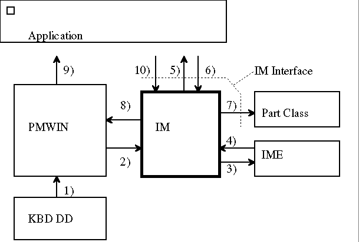
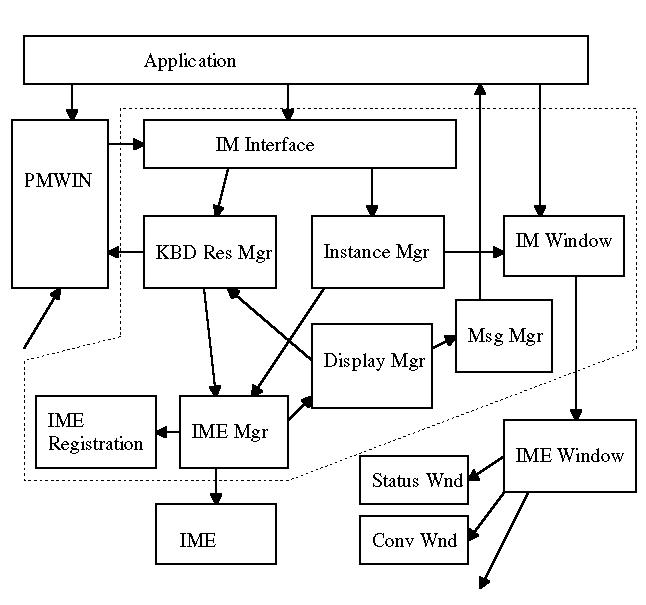

The following figure describes the position of IM module.
At the IM input model, all key event is processed in the application thread context. Application
There are three levels in the IM support level of the application.
PMWIN gives the keyboard event to IM module. IM module gives back the translated
characters to PMWIN when IME generates the translated characters from the
keyboard event given by PMWIN. Finally PMWIN gives the keyboard event and
the translated characters to the Application by returning of WinGetMsg.
KBD DD
KBD DD generates the keyboard event from the keyboard hardware interrupt.
The keyboard event is queued into the PMWIN system queue.
Part Class
The IME vendor can provide the unique user interface. When the IME provides
the name of IME window at ImeInitialize, the system (IM window) forwards
the messages related to user interface to the IME window. The IME window
can dispatch the messages to the IME unique Part Class window. The system
provides the some default Part Classes. The IME can use the default Part
Class if IME does not need the unique user interface. The detail is described
in "Default IM Classes" section.
IME
The IME generates the translated characters from the keyboard events. When the IME needs to display the candidate string, the IME should request the system to generate the user interface messages for the IME window in order that the application can interc ept the user interface messages.
The IME receives the key event conforming to PM SPEC. The key event has
the IME virtual key as the additional information. The IME virtual keys
are defined to all keys including the alphabet keys.
IM
The IM system is the extension module of PMWIN for the DBCS conversion support. The IM system gets the keyboard event from PMWIN. The IM system pass the keyboard event to the current IME. The IM system provides the helper IM API for the IME module.
The IM syetm is described as following figure:
The IM module can be decomposed into following: